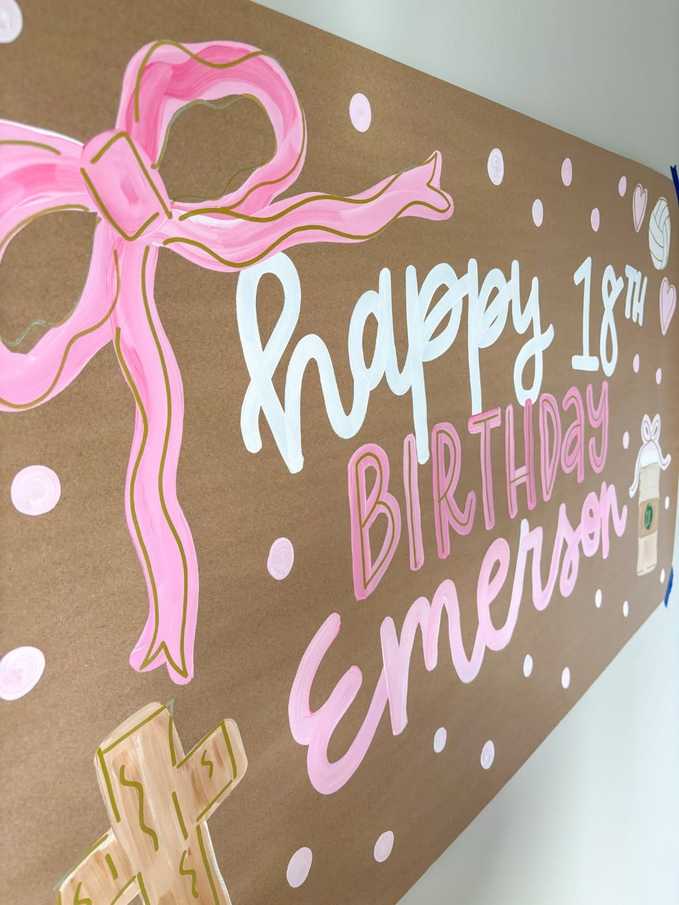
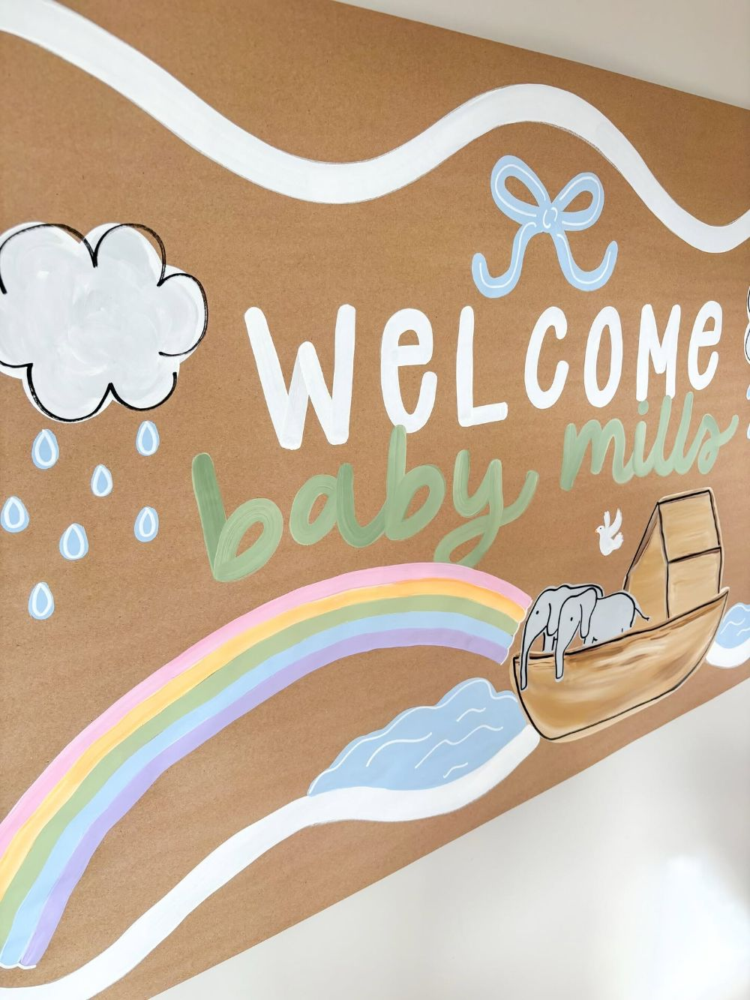

First birthday banners
A name and a big number one, in soft colors or bold ones, for the party and the photos.
Hand painted birthday banners
The name, the age and the party colors, painted by hand. Made to hang at the celebration and keep long after it.
Banners for every birthday
A custom birthday banner from Chintz Creative is a personalized party banner painted by hand by Bailey Powers, with the guest of honor's name, age, theme and colors. Each banner is made to order for the party.
A name and a big number one, in soft colors or bold ones, for the party and the photos.
Painted to match the party theme, from florals to favorite animals.
30th, 40th, 50th and beyond, with the name, the year or an inside joke.
A larger painted banner to hang behind the cake table or the photo spot.
The campus, the colors and the name, painted large for a graduation party or a big announcement.
The same hand painted approach, for showers and other celebrations.
Pair a banner with a small custom watercolor of the birthday person to keep.



Before you start
The intake form walks through each of these. Rough answers are fine.
Questions
Yes. Chintz Creative paints personalized birthday banners by hand with the name, age, theme and colors of the party.
Yes. Describe the theme and colors on the intake form, and attach a photo of your invitation or inspiration if you have one.
Yes, along with kids' party banners and milestone 30th, 40th and 50th birthday banners.
Price depends on size and detail. The intake form asks for a budget range so the banner can be designed to fit.
Order as soon as you have a party date. Put the date on the form and Bailey will confirm the timing.
Yes. Along with birthday banners, Chintz Creative paints graduation, congratulations, baby shower and bridal shower banners, like a Noah's ark welcome baby banner and an Auburn campus graduation banner.
Large banners are hand painted on heavy kraft paper, sized to hang behind a cake table or as a photo backdrop.
Also from the studio: Custom watercolors · Hand lettering
Commission a piece
The intake form takes about five minutes. It asks for everything Bailey needs to quote your piece, so there is no back and forth before she can start.